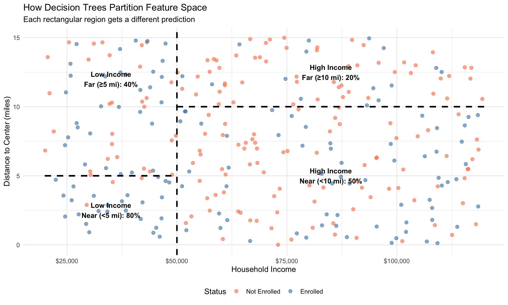
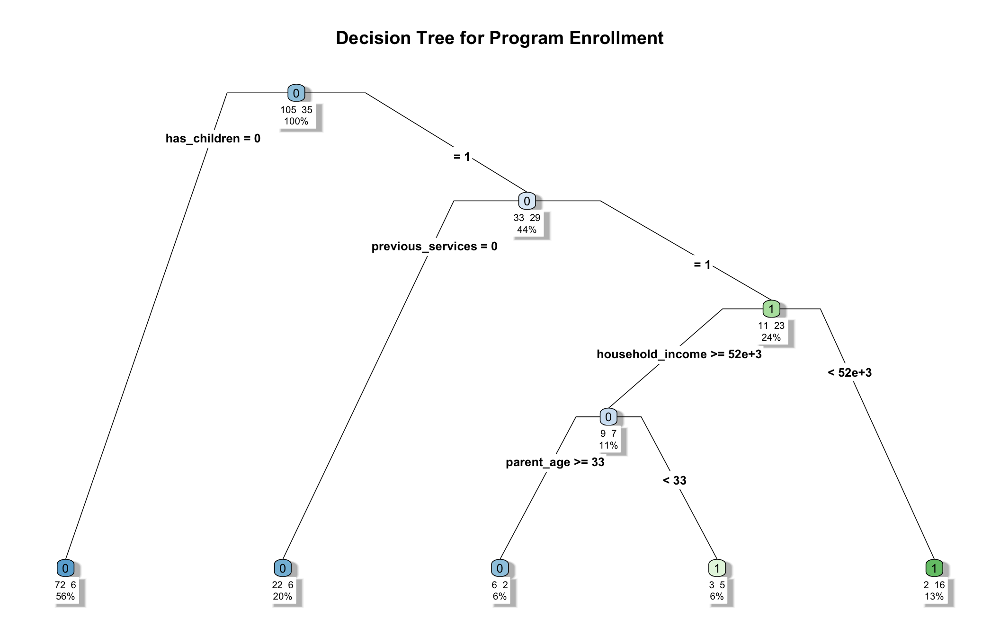
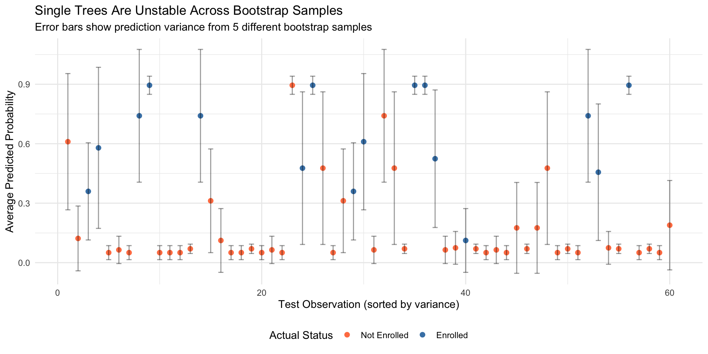
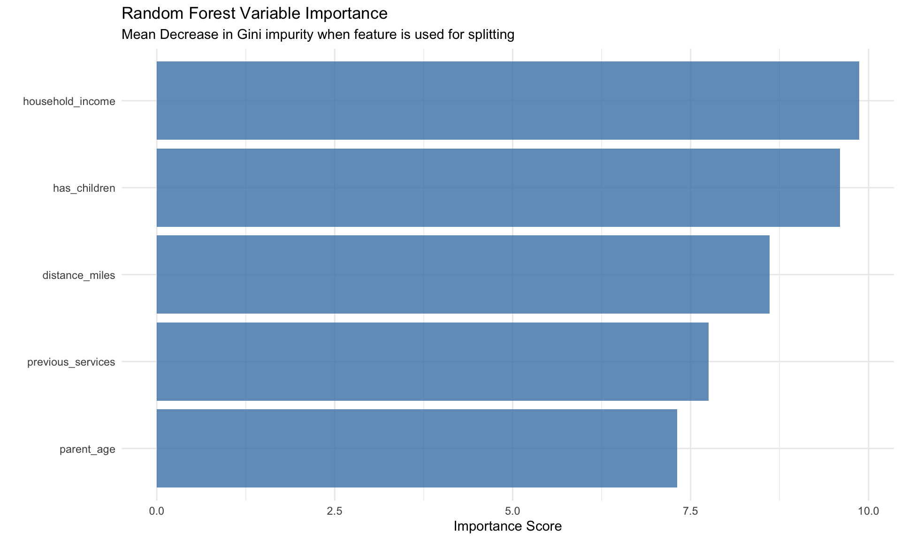
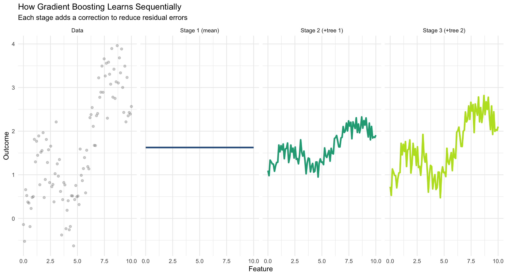
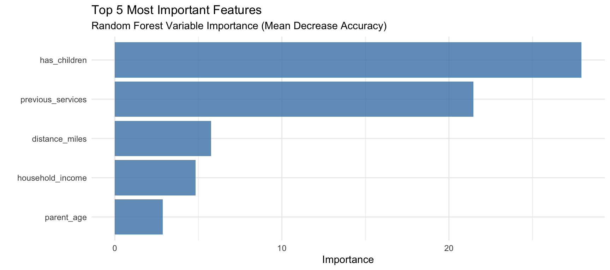
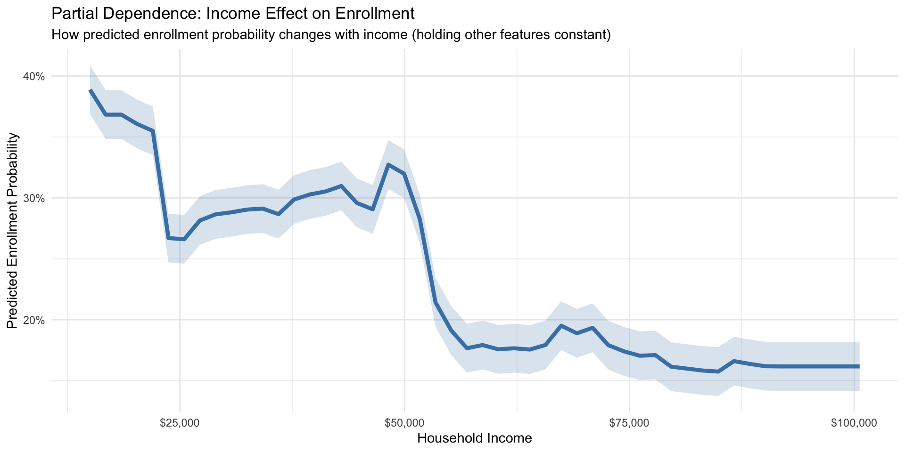
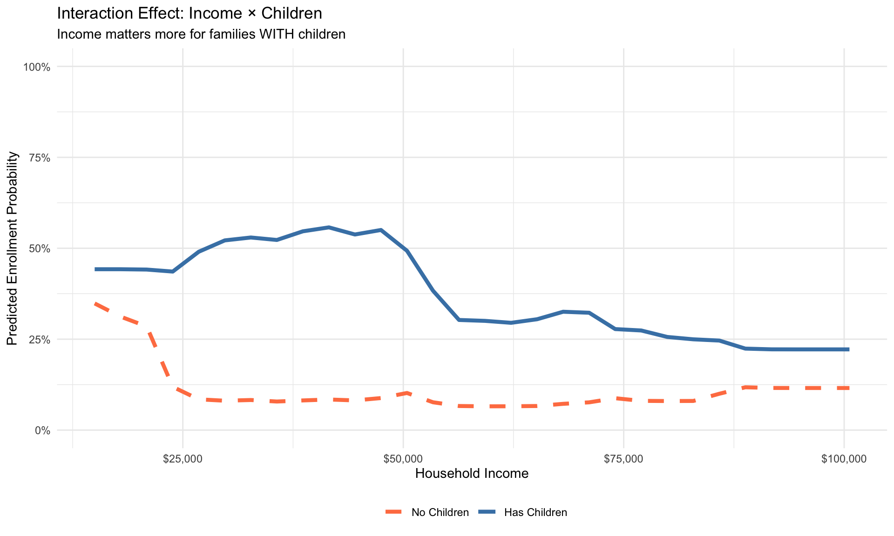

Decision Trees, Random Forests, and Gradient Boosting
2025-11-24
By the end of this session, you’ll be able to:
Note
Key insight: Tree-based models automatically capture non-linear relationships and interactions without feature engineering, making them powerful for complex policy data—but at the cost of some interpretability.
Last week we learned: Regularization helps linear models handle many features
But linear models still assume:
Policy example: Predicting program enrollment
Important
Problem: We’d need to manually specify all interactions and non-linearities. With many features, this becomes impractical!
Decision trees work by asking a series of yes/no questions:
Q1: Does household have children?
→ No: Predict 15% enrollment
→ Yes: Go to Q2
Q2: Is household income < $50K?
→ No: Predict 35% enrollment
→ Yes: Go to Q3
Q3: Is distance to center < 5 miles?
→ No: Predict 40% enrollment
→ Yes: Predict 75% enrollmentKey advantages:

Key concept: Trees create rectangular partitions in feature space, each with its own prediction.
Core idea: Recursively split data to minimize prediction error
Algorithm (CART - Classification and Regression Trees):
Note
Greedy algorithm: At each step, makes the best split available right now, without looking ahead. Not guaranteed to find the globally optimal tree!
For classification (e.g., enrolled vs not), we need a measure of “impurity”
\[\text{Gini} = \sum_{k=1}^K p_k(1-p_k)\]
Where \(p_k\) = proportion of class \(k\)
Interpretation:
Most commonly used in practice (default in most software)
\[\text{Entropy} = -\sum_{k=1}^K p_k \log(p_k)\]
Interpretation:
From information theory: Measures uncertainty
Example: Node with 70% enrolled, 30% not enrolled
Scenario: 100 families, 60 enrolled, 40 not enrolled
| Split | N | Enrolled | Not Enrolled | Gini |
|---|---|---|---|---|
| Parent Node | 100 | 60 | 40 | 0.48 |
| Split A: Income < $50K | 70 | 50 | 20 | 0.41 |
| Split A: Income ≥ $50K | 30 | 10 | 20 | 0.44 |
| Split B: Has Children | 55 | 45 | 10 | 0.33 |
| Split B: No Children | 45 | 15 | 30 | 0.44 |
Weighted Gini after split:
Choose Split B (has children?) because it reduces impurity more!
# Create sample enrollment data with clear patterns
set.seed(456)
n_families <- 200
enrollment_data <- tibble(
family_id = 1:n_families,
household_income = rnorm(n_families, 55000, 20000),
has_children = sample(0:1, n_families, replace = TRUE, prob = c(0.5, 0.5)),
distance_miles = rexp(n_families, rate = 0.2),
previous_services = sample(0:1, n_families, replace = TRUE, prob = c(0.6, 0.4)),
parent_age = rnorm(n_families, 32, 6)
) %>%
mutate(
household_income = pmax(15000, household_income),
# True enrollment depends on these factors with strong interactions
enroll_prob = plogis(-1.0 +
-0.00003 * household_income +
2.0 * has_children +
-0.25 * distance_miles +
2.5 * previous_services +
1.0 * has_children * (household_income < 50000)),
enrolled = rbinom(n_families, 1, enroll_prob)
) %>%
select(-enroll_prob)
# Quick look
head(enrollment_data, 3)# A tibble: 3 × 7
family_id household_income has_children distance_miles previous_services
<int> <dbl> <int> <dbl> <int>
1 1 28130. 0 7.10 0
2 2 67436. 1 2.27 1
3 3 71017. 0 8.40 0
# ℹ 2 more variables: parent_age <dbl>, enrolled <int>
Class balance in full data:
0 1
149 51 Proportion enrolled: 0.255 # Split data
set.seed(789)
train_idx <- createDataPartition(enrollment_data$enrolled, p = 0.7, list = FALSE)
train_data <- enrollment_data[train_idx, ]
test_data <- enrollment_data[-train_idx, ]
# Fit decision tree
tree_model <- rpart(
enrolled ~ household_income + has_children + distance_miles +
previous_services + parent_age,
data = train_data,
method = "class", # Classification tree
control = rpart.control(
cp = 0.005, # Complexity parameter (like regularization) - lower allows more splits
maxdepth = 5, # Maximum tree depth
minsplit = 15 # Minimum observations to attempt split
)
)
cat("Tree structure created with",
sum(tree_model$frame$var == "<leaf>"), "leaf nodes\n")Tree structure created with 5 leaf nodes
Reading the tree: - Each node shows: condition, predicted class, probability, % of data - Follow branches left (yes) or right (no) based on conditions
Example family: Income = $45K, has children, 3 miles away, no previous services
Root: Everyone starts here (60% enrolled overall)
├─ Previous services? NO → Go right
│ └─ Has children? YES → Go left
│ └─ Distance < 5 miles? YES → Go left
│ └─ Prediction: 75% probability of enrollment → PREDICT: Enrolled# Make prediction for this family
new_family <- tibble(
household_income = 45000,
has_children = 1,
distance_miles = 3,
previous_services = 0,
parent_age = 30
)
prediction <- predict(tree_model, new_family, type = "prob")
cat("Predicted probability of enrollment:",
round(prediction[1, "1"] * 100, 1), "%\n")Predicted probability of enrollment: 21.4 %Key insight: Same prediction for ALL families in this leaf node!
Actual
Predicted 0 1
0 42 7
1 2 9# Calculate accuracy
accuracy <- sum(diag(conf_matrix)) / sum(conf_matrix)
# Compare to baseline (predict most common class)
baseline_pred <- rep(names(which.max(table(train_data$enrolled))), nrow(test_data))
baseline_accuracy <- mean(baseline_pred == test_data$enrolled)
cat("\nPerformance Comparison:\n")
Performance Comparison:Baseline (always predict most common class): 73.3 %Decision Tree: 85 %Improvement over baseline: 11.7 percentage pointsPretty good for a simple tree! But we can do much better…
Single trees have a critical weakness: They overfit easily!

Problem: Small changes in training data → dramatically different trees → different predictions
Decision trees trade bias for variance:
| Model | Training Accuracy | Test Accuracy | Gap |
|---|---|---|---|
| Shallow Tree (maxdepth=2) | 83.6 | 86.7 | -3.1 |
| Deep Tree (maxdepth=10) | 93.6 | 73.3 | 20.2 |
Important
Solution: Instead of building one perfect tree, build many imperfect trees and average them! This is called ensemble learning.
Key insight: Many weak learners → one strong learner
Analogy: Which is more accurate?
Usually #2, if experts have diverse perspectives!
Random Forest recipe:
Note
Why it works: Individual trees overfit in different ways. Averaging cancels out the noise, keeps the signal!
Random Forests use two types of randomness to create diversity:
Each tree sees different data: - Sample n observations with replacement - ~63% of data in each bootstrap - ~37% left out (“out-of-bag”)
Effect: Trees see different patterns
Each split considers random features: - Typically \(\sqrt{p}\) features for classification - Typically \(p/3\) features for regression
Effect: Prevents strong features from dominating every tree
| Problem Size | Features per Split (Classification) | Features per Split (Regression) |
|---|---|---|
| 5 features | √5 ≈ 2 | 5/3 ≈ 2 |
| 50 features | √50 ≈ 7 | 50/3 ≈ 17 |
| 500 features | √500 ≈ 22 | 500/3 ≈ 167 |
# Fit Random Forest
rf_model <- randomForest(
factor(enrolled) ~ household_income + has_children + distance_miles +
previous_services + parent_age,
data = train_data,
ntree = 500, # Number of trees
mtry = 3, # Features per split (try more than √5 for small data)
importance = TRUE, # Track feature importance
nodesize = 5, # Minimum node size (smaller for small dataset)
maxnodes = 15 # Limit tree complexity
)
# Print results
print(rf_model)
Call:
randomForest(formula = factor(enrolled) ~ household_income + has_children + distance_miles + previous_services + parent_age, data = train_data, ntree = 500, mtry = 3, importance = TRUE, nodesize = 5, maxnodes = 15)
Type of random forest: classification
Number of trees: 500
No. of variables tried at each split: 3
OOB estimate of error rate: 18.57%
Confusion matrix:
0 1 class.error
0 96 9 0.08571429
1 17 18 0.48571429OOB error: Prediction error on out-of-bag samples (like built-in cross-validation!)
Actual
Predicted 0 1
0 41 3
1 3 13
Accuracy Comparison:Baseline (most common class): 73.3 %Single Tree: 85 %Random Forest: 90 %RF Improvement over baseline: 16.7 ppNote: With small datasets (n=140 training), Random Forests may only marginally improve over a well-tuned single tree. The real power shows with larger datasets (n > 1000) where variance reduction is more substantial!
One of the most useful features of Random Forests: Variable importance scores

Interpretation: Household income and having children are the strongest predictors of enrollment.
Two main measures in Random Forests:
How it’s calculated: - For each tree, for each feature - Sum the decrease in Gini impurity when that feature is used to split - Average across all trees
Interpretation: - Higher = feature creates purer nodes - Biased toward high-cardinality features
When to use: Quick screening, exploratory analysis
How it’s calculated: - For each tree, for each feature - Randomly permute that feature in OOB data - Measure increase in prediction error - Average across all trees
Interpretation: - Higher = feature is more important for accurate predictions - Less biased, more reliable
When to use: Final importance ranking, reporting to stakeholders
Tip
Policy recommendation: Report Mean Decrease Accuracy for stakeholder-facing documents—it’s more interpretable.
Strengths ✓
Limitations ✗
Note
Policy trade-off: Random Forests sacrifice interpretability for accuracy. Use when prediction matters more than explanation!
Random Forest: Build many trees in parallel, each independent
Gradient Boosting: Build trees sequentially, each learning from previous mistakes
The boosting algorithm:
Note
Key insight: Instead of averaging independent trees (Random Forest), boosting creates a committee where each member focuses on what previous members got wrong!

Notice: Predictions get progressively better as we add more trees!
Boosting has more knobs to turn than Random Forests:
Analogy: Step size when walking toward solution
Analogy: How many steps to take
Analogy: How complex each step is
Analogy: Practice on subset before full game
XGBoost = Most popular gradient boosting implementation
Why XGBoost dominates Kaggle competitions:
# XGBoost in R (using caret interface)
library(xgboost)
xgb_model <- train(
factor(enrolled) ~ .,
data = train_data,
method = "xgbTree",
trControl = trainControl(method = "cv", number = 5),
tuneGrid = expand.grid(
nrounds = c(100, 200, 500), # Number of trees
max_depth = c(3, 5, 7), # Tree depth
eta = c(0.01, 0.1, 0.3), # Learning rate
gamma = 0, # Minimum split loss
colsample_bytree = 0.8, # Feature sampling
min_child_weight = 1, # Minimum sum of weights
subsample = 0.8 # Row sampling
)
)| Aspect | Random Forest | Gradient Boosting |
|---|---|---|
| Building Strategy | Parallel (independent) | Sequential (learn from mistakes) |
| Tree Depth | Deep trees | Shallow trees |
| Bias-Variance Trade-off | Reduces variance | Reduces bias |
| Training Speed | Faster (parallelizable) | Slower (sequential) |
| Overfitting Risk | Low (averaging helps) | Higher (needs careful tuning) |
| Hyperparameter Tuning | Easy (few parameters) | Complex (many parameters) |
| Interpretability | Moderate (variable importance) | Lower (complex interactions) |
| When to Use | General purpose, robust | Competitions, maximum accuracy |
Tip
Practical advice: Start with Random Forest (easier, more robust). Try XGBoost if you need maximum accuracy and have time to tune.
Problem: Random Forests and XGBoost are “black boxes”
Policy stakeholders ask:
Three approaches to interpretability:
Important
Policy reality: You often need to sacrifice some accuracy for interpretability. A slightly worse model you can explain is better than a perfect model you can’t defend!
We’ve already seen this for Random Forest:

Stakeholder message: “The strongest predictors of enrollment are previous service use and having children in the household.”
Question: How does enrollment probability change with income, holding everything else constant?
How PDPs work:

Insight: Enrollment probability decreases as income increases—wealthier families less likely to enroll.
Trees automatically capture interactions. We can visualize them:

Key finding: The income effect is stronger for families with children—an interaction the model discovered automatically!
For policy stakeholders, provide:
What NOT to do:
Note
Communication principle: Focus on what the model learned, not how it learned it. Stakeholders care about insights, not algorithms!
| Scenario | Recommendation |
|---|---|
| Need to explain to non-technical audience | Single Decision Tree (shallow) |
| Maximum predictive accuracy required | XGBoost or LightGBM (with tuning) |
| Limited computational resources | Single Tree or Random Forest (small) |
| Many features, correlated | Random Forest or Elastic Net |
| Many categorical features (high cardinality) | CatBoost (native categorical handling) |
| Very large datasets (millions of rows) | LightGBM (fastest for big data) |
| Non-linear relationships, unknown interactions | Random Forest or XGBoost |
| Regulatory/legal scrutiny expected | Interpretable model (Tree, Linear) + SHAP |
| Lots of missing data | XGBoost or CatBoost (native missing support) |
| Need GPU acceleration | LightGBM or XGBoost (GPU support) |
Best practices for tree-based models in policy:
1. Start simple, add complexity
# Step 1: Fit baseline single tree
single_tree <- rpart(outcome ~ ., data = train, maxdepth = 3)
# Step 2: Try Random Forest with defaults
rf_default <- randomForest(outcome ~ ., data = train)
# Step 3: Tune Random Forest
rf_tuned <- train(outcome ~ ., data = train, method = "rf",
tuneGrid = expand.grid(mtry = c(2, 5, 10)))
# Step 4: If needed, try XGBoost
xgb_model <- train(outcome ~ ., data = train, method = "xgbTree")2. Always compare to simpler baselines - Logistic regression - Elastic net - Single decision tree
3. Validate thoroughly - Cross-validation during training - Hold-out test set for final evaluation - Check performance across subgroups (fairness)
Technical Mistakes
Interpretation Mistakes
Tree models can encode and amplify bias:
Example: Historical lending data
Mitigation strategies:
Important
Policy principle: Higher accuracy doesn’t excuse discrimination. Fairness is a constraint, not an optimization target!
Trees aren’t always the answer:
Use linear models when: - Relationships are roughly linear - Need coefficient interpretation - Want statistical inference (p-values) - Have few features (<20) - Need to extrapolate
Example: Credit risk assessment
Don’t use trees when: - Full transparency required by law - Stakeholders demand explainability - Computational resources very limited - Real-time prediction critical (<1ms) - Training data very small (n < 100)
Example: Medical diagnosis requiring FDA approval
Tip
Decision rule: If linear/logistic regression achieves 90% of tree performance, use the simpler model for policy work!
Tree-based models are often just one component:
Typical policy ML pipeline:
Real-world example: Fraud detection system - Layer 1: Rules-based filters (transparent, fast) - Layer 2: Logistic regression (interpretable) - Layer 3: Random Forest (final check, high accuracy) - Human review: Uncertain cases
What’s next for tree-based models:
Note
For next week: We’ll explore unsupervised learning—clustering, PCA, and dimension reduction techniques for discovering patterns without labels!
Looking ahead:
Challenge: Course evaluations have low response rates, yet they’re critical for improving teaching
Incentive structure: If ≥90% of the class completes evaluations by [deadline], everyone gets +0.5% added to their final grade
“Wait, the course is curved—does this help me?”
Yes! Here’s why:
Tip
Game theory insight: Not responding costs both you AND your classmates the 0.5% buffer. Your self-interest aligns with the group’s interest—classic coordination game where cooperation dominates!
Remember: Tree-based models are among the most powerful tools in applied machine learning. They automatically discover non-linear relationships and interactions, making them ideal for complex policy data—but always balance accuracy with interpretability and fairness!